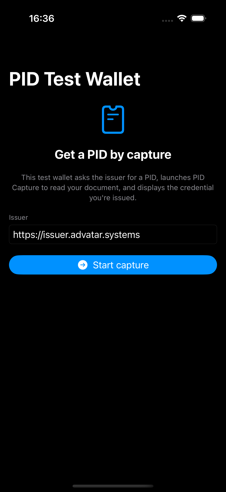

How any wallet obtains a formally-verified Person Identification Datum (PID) by launching the standalone PID Capture companion (a full app or an install-free App Clip) that reads an eMRTD passport chip over NFC and confirms a live human with iProov Genuine Presence Assurance — with the credential minted straight back into the wallet that started the flow, bound to that wallet’s own key.
PID Capture decouples who proves the identity from who holds the credential. A wallet that cannot itself read a passport chip — a thin wallet, an App-Clip-only experience, or a wallet on another device — opens a short-lived capture session bound to its own proof-of-possession key. The companion performs the sensitive capture (chip, then liveness + face match), the issuer validates it authoritatively, and the resulting PID is bound to the requesting wallet’s key. The companion never holds the credential and never sees a signing key.
cnf.service-nfc relay, then an iProov GPA scan that proves liveness and matches the face to the chip portrait.flowchart LR W["Requesting wallet
(e.g. PID Test Wallet)
holds ephemeral P-256 key"] EDGE["pid.advatar.systems edge
App Site Association +
reverse proxy"] PC["PID Capture
app / App Clip
(CaptureKit)"] IPROOV["iProov GPA
liveness SP"] RELAY["service-nfc relay
+ eMRTD chip"] VC["VCIssuer
capture backend
Lean-verified gate"] W -->|"1 create session (holder_jwk)"| VC W -->|"2 open invocation URL (QR / link)"| EDGE EDGE -->|"universal link"| PC PC -->|"3 chip read (APDU relay) → DG2"| RELAY PC -->|"4 liveness + match (portrait ref)"| IPROOV PC -->|"5 submit attestation + App Attest"| EDGE EDGE --> VC VC -->|"validate + mint PID"| VC VC -->|"6 credential offer / poll"| W
pid.advatar.systems edge serves the Apple App Site Association (so the link opens the app) and proxies the capture API to the issuer.
sequenceDiagram
autonumber
participant W as Wallet
participant VC as VCIssuer
participant PC as PID Capture
participant IP as iProov GPA
participant NF as service-nfc + chip
W->>VC: POST /v1/pid-capture/session {holder_jwk}
VC-->>W: session_id, nonce, invocation_url, iProov token
Note over W: binds PID to holder key (cnf = holder_jwk)
W->>PC: open invocation_url (universal link / App Clip)
PC->>VC: GET /v1/pid-capture/{id} (params)
VC-->>PC: nonce, holder_jkt, audience, iProov token+URL
PC->>NF: read eMRTD (MRZ, nonce, holder_jkt, audience)
NF-->>PC: signed attestation (resultToken) + DG2 portrait
PC->>IP: register DG2 as reference, launch GPA
IP-->>PC: liveness + 1:1 likeness verdict
PC->>VC: POST /v1/pid-capture/{id}/evidence {attestation} + App Attest
Note over VC: validate liveness + likeness (S2S), re-run Passive Auth,
check binding, App Attest → Lean-proved gate
VC-->>VC: mint PID SD-JWT bound to holder key
VC-->>W: poll → credential_offer + deep link
Note over W: wallet ingests / displays the PID
/v1/pid-capture handlers are as shipped; the current CaptureCoordinator.run still runs liveness before the chip, so reordering it to this is a tracked follow-up.Live screenshot Representative UI mockup (device-only screen)

https://pid.advatar.systemshttps://pid.advatar.systems.The passport’s contactless chip is an eMRTD (ICAO 9303). PID Capture uses the ChipmunkNFC SDK,
which drives CoreNFC on the phone but runs the eMRTD protocol through the service-nfc WebSocket relay
(wss://nfc.dev-eu.iproov.id/channel). The phone is the radio bridge; the cryptographic session and the
document’s authenticity checks are handled server-side and returned as a signed attestation.
skipDG2: false).doPA) — verifies the Document Security Object signature chains to a CSCA.doAA) — challenge–response proving the chip is genuine, not cloned.The relay welds the VCIssuer session context — session nonce, target holder-key thumbprint, and audience — into the signed resultToken it returns. That ties this specific chip read to this specific capture session and this specific wallet, so evidence cannot be replayed or re-pointed at another wallet.
sequenceDiagram autonumber participant U as Passport chip participant PH as iPhone (CoreNFC) participant RL as service-nfc relay participant VC as VCIssuer PH->>U: RF field + APDUs (BAC/PACE from MRZ) U-->>PH: encrypted APDU responses PH->>RL: relay APDUs over WebSocket (+ session binding) RL->>U: DG2 read, Passive Auth, Active Auth (via phone) RL-->>PH: signed attestation (resultToken) with binding PH->>VC: submit attestation Note over VC: re-runs Passive Authentication authoritatively
and verifies the welded binding VC-->>VC: accept chip evidence
Two distinct checks are involved, and separating them explains the order. Liveness (iProov Genuine Presence Assurance) asks “is this a real, present human?” — a brief, screen-illuminated face scan that resists photos, masks and replays. Likeness (a 1:1 face match) asks “is that live face the same person as the passport photo?” A likeness check needs a reference photo, and the only trustworthy one is the chip’s DG2 portrait — so the chip is read first, its portrait is registered with iProov as the reference, and the GPA scan runs after, settling liveness and likeness in one capture. VCIssuer mints the iProov token server-to-server when the session opens, so the client never chooses its own parameters.
The SDK reports only whether the capture completed. The authoritative pass/fail is decided by VCIssuer validating the result against iProov’s API — downgrade-closed: if the liveness provider is unconfigured or unreachable, issuance fails rather than proceeding without proof.
The likeness match needs a reference face, and the authoritative one is the chip’s DG2 portrait — which only exists after the NFC read. So the sequence is MRZ → NFC (portrait) → GPA: iProov is registered with that portrait and the scan proves a live human and matches it. Running GPA before the chip could only ever prove liveness, never likeness.
| Property | How it is enforced |
|---|---|
| Holder-key binding | The PID’s cnf is the wallet’s P-256 JWK, registered at session creation. Only that wallet’s key can later present the credential. |
| Session binding & anti-replay | A per-session nonce and the target holder-key thumbprint + audience are welded into the eMRTD attestation and checked by the issuer. |
| Genuine companion | The evidence submission carries an App Attest assertion bound to the request body, so VCIssuer can require a real, registered PID Capture instance. |
| Authoritative validation | The iProov liveness + likeness verdict (S2S) and Passive Authentication are re-validated at the issuer, downgrade-closed. The client is never trusted to decide. |
| Short-lived sessions | A capture session accepts evidence for 900 s, then must be recreated. |
| Verified issuance gate | The signing decision is a pure Rust kernel mirrored by a Lean 4 model and Tamarin lemmas; only the kernel can authorize a signature. An optional hybrid ES256 + ML-DSA-65 (post-quantum) wrapper is available. |
PID Capture claims applinks:pid.advatar.systems (and appclips:pid.advatar.systems). The
pid.advatar.systems edge serves the Apple App Site Association at
/.well-known/apple-app-site-association for app id L2AF8KFX35.eu.advatar.wallet.pidcapture
(and .Clip), so opening https://pid.advatar.systems/pid-capture?session=… launches the
installed app — or an App Clip with no App Store install. The same host reverse-proxies the capture API
(/v1/pid-capture/*) to the issuer, so the companion resolves everything from one origin.